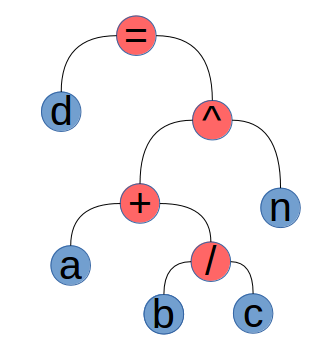
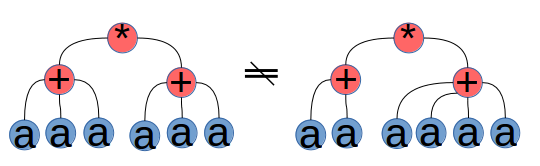
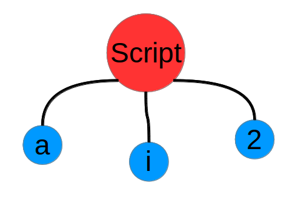
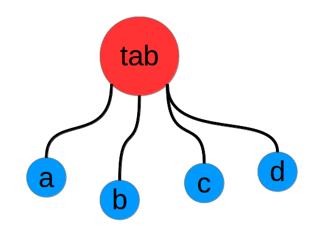

Introduction to my project
A [imath]\LaTeX[/imath] math content search engine
Zhong Wei
Is the problem too Big?
- you are inventing a new thing
- need a lot of work to build from ground up
- a new model different from mainstream models
- formula can have complex, various representation, matrix, hat, subscript...
- ambiguity, parser needs to understand the math?
- search efficiency
Notable existing systems
- System using existing classical model (Integrate with Lucene)
- Implemented by Integration with Lucene
- DLMF
- MIaS
- 5exy
- EgoMath (boolean model approach)
- WikiMirs (Similar idea to EgoMath)
- Implemented by Integration with Lucene
- System using unification approach
- MWS (using substitution tree indexing)
- Problem Solving System
- Wolfram alpha
- Symbol Lab
Notable existing systems
- Close system
- (uni)quation
- Springer LaTeX search
Reference
https://github.com/t-k-/math-se/blob/master/doc/5exy.pdf?raw=truehttps://github.com/t-k-/math-se/blob/master/doc/EgoMath.pdf?raw=true
https://github.com/t-k-/math-se/blob/master/doc/term-indexing.ps?raw=true
Wolfram alpha
Symbol Lab
Math Web Search engine (MWS)
\frac{?a^2 + ?b^2}{?a^2}
Math Web Search engine (MWS)
The MathWebSearch system (MWS) is a content-based search engine for mathematical formulae. It indexes MathML formulae, using a technique derived from automated theorem proving: Substitution Tree Indexing.
Developed by KWARC group in Jacobs University of Germany under the instruction of Prof. Michael Kohlhase
Unification-related algorithm (automated theorem proving)
Reference
https://github.com/KWARC/mwshttps://github.com/KWARC/mws/issues/62
https://kwarc.info/people/mkohlhase
http://link.springer.com/chapter/10.1007%2F3-540-59200-8_52
(uni)quation
(uni)quation
Nevertheless I don’t think that to opensource it now is a good idea because I’m sure that in the current state of the project I will fail to build a community.
-- Denis Rystsov (Russia)
Reference
http://uniquation.s3.amazonaws.com/info-en.html
http://rystsov.info/2009/05/01/uniquation.html
Is the problem too Big?
you are inventing a new thing- need a lot of work to build from ground up
- a new model different from mainstream models
- formula can have complex, various representation, matrix, hat, subscript...
- ambiguity, parser needs to understand the math?
- search efficiency
Demo system
http://96.126.106.50/math-se/search.htmlIs the problem too Big?
you are inventing a new thingneed a lot of work to build from ground up- a new model different from mainstream models
- formula can have complex, various representation, matrix, hat, subscript...
- ambiguity, parser needs to understand the math?
- search efficiency
Think out of the classical IR model
the problem
- [imath]a + b = b + c[/imath]
- [imath]ax + (b + c) \not= (a+b)x +c[/imath]
- symbols can have used interchangeably, e.g. [imath]\color{red}{a}^2 + \color{red}{b}^2 = \color{red}{c}^2[/imath] and [imath]\color{red}{x}^2 + \color{red}{y}^2 = \color{red}{z}^2[/imath]
- same symbol in the same equation means something: [imath]\color{red}{p}(1-\color{red}{p})[/imath] and [imath]a(1-b)[/imath]
the intuitive approach to solve
- Tree structure
- Tokenization
- Unification Algorithm or ?
Tree construction
given math for formula in tex:
(a+\frac{b}{c})^n = d
which represents math formula: [dmath] (a+\frac{b}{c})^n = d [/dmath] Convert into a tree structure:
Tree construction
utilize LR(1) parser
6 tex: tex '+' term 9 tex: tex EQ_CLASS tex 13 term: term DIV factor 18 factor: factor script

in some cases, a node needs to pass its sons if two fathers are the same token:

Compare two trees: bottom to up
what we call branch word...
 b
/
+
^
=
b
/
+
^
=
the symbol name here is for demonstration purpose, the real project will do tokenization.
the same idea is published before:
https://github.com/t-k-/math-se/blob/master/doc/significant.pdf?raw=trueToken weight in the tree
we assign weights to each token in the tree to distinguish:
[dmath](a+a+a)\times(a+a+a)[/dmath] from [dmath](a+a)\times(a+a+a+a)[/dmath]
so the previous example branch word will have weight:
b (w=1) / (w=3) + (w=5) ^ (w=7) = (w=9)Score and Ranking
score between branch words
given two branch word:
\alpha 1-3-5-8-11-12-
and
\beta 2-3-5-7-9-
let [imath]m[/imath] be the number of continuous matches from the begining of the branch word, [imath]n[/imath] be number of same branch word, [imath]l[/imath] be the length of branch word, [imath]b[/imath] be the boolean value indicating if two symbol matches literally:
[dmath] s_{d,q} = \frac{\min(n_d, n_q)}{n_q} \cdot \frac{m + b + 1}{\max(l_d, l_q)} \\ [/dmath]
score between formula
the mark-and-cross algorithm
https://github.com/t-k-/math-se/blob/master/doc/mark-and-cross-algorithm.pyhttps://github.com/t-k-/math-se/blob/master/doc/example/algorithm.png
Is the problem too Big?
you are inventing a new thingneed a lot of work to build from ground upa new model different from mainstream models- formula can have complex, various representation, matrix, hat, subscript...
- ambiguity, parser needs to understand the math?
- search efficiency
tokenization
- [imath]+[/imath][imath]\oplus[/imath][imath]\pm[/imath][imath]\mp[/imath] and [imath]-[/imath][imath]\setminus[/imath][imath]\lnot \qquad[/imath] add and minus
- [imath]()[/imath][imath]\left[\right][/imath][imath]\left\{\right\}[/imath][imath]\left<\right> \qquad[/imath] left/right class
- [imath]\sim \approx \simeq \cong \dot= \equiv \propto \ge \gt \notin \neq \subset \supset \qquad[/imath] equal class
- [imath], \; | : \nmid \forall \exists \And \atop \leftarrow \rightarrow \gets \to \Leftarrow \qquad[/imath] separation class
- [imath]\int \iint \iiint \iiiint \idotsint \intop \prod \oint \bigvee \bigotimes \bigwedge \sum \lim \coprod \bigsqcup \sup \inf \qquad[/imath] sum class
- [imath]\exp \min \max \sin \cos \tan \sec \csc \arcsin \sinh \ker \deg \log \ln \lg \gcd \det \dim \qquad[/imath] function class
- [0-9]+\.?[0-9]* constant class
- [imath]\Pi \alpha \beta \gamma \eta \zeta \kappa \mu \nu \xi \phi \omicron \rho \phi \psi \omega \qquad[/imath] variable class
- [imath]\pi[/imath]
- [imath]\infty[/imath]
- [imath]\emptyset[/imath]
- [imath]\perp[/imath]
- [imath]\ldots [/imath]
Tokenization using flex
"!" { return yytext[0]; }
"+"|"-"|"_"|"^" { return yytext[0]; }
"("|"\\{" { return '('; }
")"|"\\}" { return ')'; }
"|"|"\|" {
int save = abs_toggle;
abs_toggle = !abs_toggle;
if (save)
return ABS_R;
else
return ABS_L;
}
\\neg { return NEG; }
= { mkstr(yytext); return EQ_CLASS; }
\\ge { mkstr(yytext); return EQ_CLASS; }
\\not("="|"\equiv"|"\in") { mkstr(yytext); return EQ_CLASS; }
...
\\sum { mkstr(yytext); return SUM_CLASS; }
\\int { mkstr(yytext); return SUM_CLASS; }
...
\\times { mkstr(yytext); return TIMES; }
\\cdot { mkstr(yytext); return TIMES; }
\\frac { mkstr(yytext); return FRAC; }
\\dfrac { mkstr(yytext); return FRAC; }
\\sqrt { mkstr(yytext); return SQRT; }
\/ { mkstr(yytext); return DIV; }
\\div { mkstr(yytext); return DIV; }
[a-zA-Z_]'* { mkstr(yytext); return VAR; }
[0-9]+\.?[0-9]* { mkstr(yytext); return VAR; }
\\[Tt]heta { mkstr(yytext); return VAR; }
...
[ \t]+ {}
\\[a-zA-Z]+ {/* omit undefined control sequence */}
. {}
%%
complex to simple
Handle subscript, supper script and unrecognized command
[imath]\hat a^2 _i[/imath]
Handle Matrix
[imath]\left[ \begin{matrix} a & b\\ c & d \end{matrix} \right][/imath]
Syntax reduce using bison
0 $accept: doc $end
1 doc: %empty
2 | doc query
3 query: tex '\n'
4 | '\n'
5 tex: term
6 | tex '+' term
7 | tex '-' term
8 | '-' tex
9 | tex EQ_CLASS tex
10 term: factor
11 | term factor
12 | term TIMES factor
13 | term DIV factor
14 body: '{' tex '}'
15 | '(' tex ')'
16 | VAR
17 factor: body
18 | factor script
19 | ABS_L tex ABS_R
20 | FRAC '{' tex '}' '{' tex '}'
21 | SUM_CLASS body
22 | SUM_CLASS script body
23 | body '!'
24 | SQRT '[' tex ']' body
25 | SQRT body
26 script: '_' VAR
27 | '_' VAR '^' VAR
28 | '_' VAR '^' '{' tex '}'
29 | '^' VAR '_' '{' tex '}'
30 | '^' VAR
31 | '^' VAR '_' VAR
32 | '^' '{' tex '}'
33 | '^' '{' tex '}' '_' VAR
34 | '^' '{' tex '}' '_' '{' tex '}'
35 | '_' '{' tex '}'
36 | '_' '{' tex '}' '^' VAR
37 | '_' '{' tex '}' '^' '{' tex '}'
Is the problem too Big?
you are inventing a new thingneed a lot of work to build from ground upa new model different from mainstream modelsformula can have complex, various representation, matrix, hat, subscript...- ambiguity, parser needs to understand the math?
- search efficiency
Ambiguity
defined function
- [imath]\sin(x)[/imath]
- [imath]sin(x)[/imath]
self-defined function
- [imath]f(x)[/imath]
- [imath]f(a+b)[/imath]
- [imath]f(a, b)[/imath]
grouping
- [imath]\displaystyle\int f(x) \dfrac{\mathrm{d}x}{\sin x}[/imath]
- [imath]\sin 2 \pi[/imath]
- [imath]\{ x | a \left| \frac{1}{x} \right| > b \}[/imath]
Is the problem too Big?
you are inventing a new thingneed a lot of work to build from ground upa new model different from mainstream modelsformula can have complex, various representation, matrix, hat, subscript...ambiguity, parser needs to understand the math?(for documents write in standard way)- search efficiency
Efficiency consideration
Search similar branch word: file system
document b (w=1) / (w=3) + (w=5) ^ (w=7) = (w=9)
store it in the directory: ./collection/var/frac/add/sus/eq_class
query y / + , will go into the directory: ./collection/var/frac/add and search all all the branch words under sub-directories.
Document key-value database: tokyo-cabinet DB
Given a document ID, get the document information from disk.
In memory key-value database: Redis
Given a document ID, get the document score table in memory.
Thank You!
What's next?
- tune the parser and enable it to parse as many as collection
- allow concurrence search
- improve the safety of CGI program
Links
| https://github.com/t-k-/math-se |
| http://www.eecis.udel.edu/~zhongwei |
| http://96.126.106.50/math-se/search.html |
Contact
zhongwei@udel.edu
/